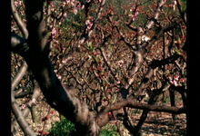

Rose Lowder: Rue des Teinturiers / Champ provençal / Les tournesols / Les tournesols colorés / Impromptu / Quiproquo / Loops (1979 / 1979 / 1982 / 1983 / 1989 / 1992 / 1976-1997)
Cinema’s Garden: The Films of Rose Lowder
Programmed by: Olivia Hunter-Willke
The practice of French-Peruvian avant-garde filmmaker Rose Lowder (born 1941) concentrates on radical ways to refine photographic and temporal features of the image. Equipped with a 16mm Bolex and filming mostly natural elements, she composes and edits images in-camera, splicing frames together as the film strip continually advances over the lens. Filmed frame-by-frame, but not sequentially, Lowder emulsifies some of the skipped frames and leaves others blank, then uses the camera to rewind and film the frames she had previously not used. Using this method, “she has created a new viewing experience, in which two different situations are viewed simultaneously” (Kortfilm). Lowder pushes the boundaries of what it means to capture nature on film, shaping a cinematographic experience with her meticulous meditations. Her films present as treasures of the natural world, but not overly precious depictions: tactile exercises of what film encompasses at its most simple yet exacting modes of operation.
All 16mm prints courtesy of Light Cone.
Rose Lowder: Rue des Teinturiers / Champ provençal / Les tournesols / Les tournesols colorés / Impromptu / Quiproquo / Loops (1979 / 1979 / 1982 / 1983 / 1989 / 1992 / 1976-1997) · 31m / 9m / 3m / 3m / 8m / 13m / 6m · 16mm
Assembled frame-by-frame (except Quiproquo and Loops), these films are concerned with spatiotemporal patterns and spontaneity. Rue des Teinturiers is composed of twelve reels, each filmed on different days during a 6 month period from a position on a balcony. Champ provençal consists of a peach orchard at three different periods from a single viewpoint. The Tournesols films are structured according to a series of patterns on plants situated in different areas of contiguous sunflower fields.